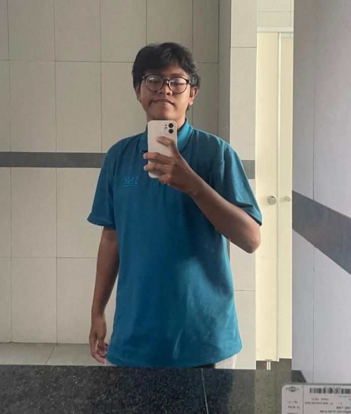
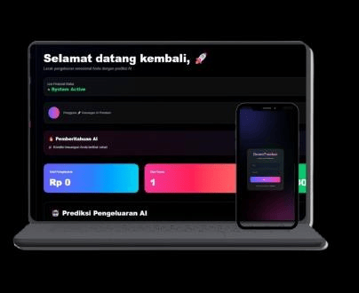
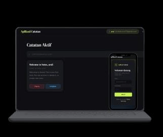

Mahasiswa Informatika UIN Banten | Web Developer | Frontend & Backend Developer
Saya adalah mahasiswa Program Studi Informatika di Universitas Islam Negeri Sultan Maulana Hasanuddin Banten yang memiliki minat besar dalam bidang Web Development, Frontend Development, Backend Development, dan UI/UX Design. Saya senang mempelajari teknologi baru serta membangun website yang modern, responsif, dan mudah digunakan. Melalui berbagai proyek yang telah saya kerjakan, saya terus mengembangkan kemampuan dalam HTML, CSS, JavaScript, Python, dan teknologi web lainnya. Saya juga memiliki kemampuan problem solving yang baik, mampu bekerja secara mandiri maupun dalam tim, serta selalu berusaha memberikan solusi digital yang bermanfaat dan berkualitas. Saat ini saya terus belajar dan mengembangkan keterampilan untuk menjadi Web Developer profesional yang mampu menciptakan produk digital inovatif dan memberikan dampak positif bagi banyak orang.


AI Financial Monitor untuk melacak dan menganalisis pengeluaran pengguna.

Aplikasi catatan modern untuk membuat dan mengelola catatan.
GitHub, LinkedIn dan WhatsApp tersedia melalui tombol di atas.